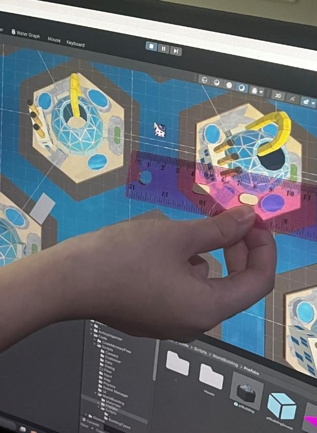
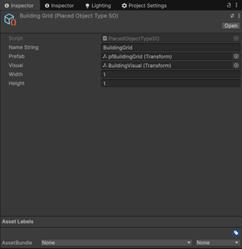
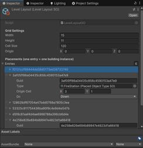
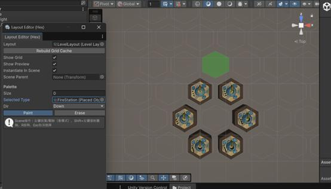
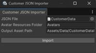
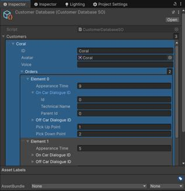

概述
从 MVP 到 Alpha 阶段，我调整了很多功能。
驾驶舱 UI 与视角
我和美术一起重新设计了 UI。我们反复测试驾驶视角，检查它是否合理、布局是否足够宽敞舒适。
世界生成：六边形网格
- 我为世界创建了六边形网格，并把建筑放在每个格子的中心。这样做主要是为了之后的自动驾驶和寻路，也让世界更容易编辑和扩展。
- 六边形网格参考了 CodeMonkey 的做法：只处理六边形的中心点和行列偏移，不真正绘制六边形。
- 设置行列间距时，我没有用数学计算，而是用了很基础的方法：直接在屏幕上量，再调整数值。希望我的曲面屏没有带来太大误差。


建筑类型和布局存放在专门的 ScriptableObject 中。




在 ChatGPT 的帮助下，我还做了一个更直观的关卡布局工具，现在可以直接「画」建筑并保存数据。


目前建筑系统还不会自动生成码头和连接桥，我计划在下一阶段加入。
对话数据管线
- 我建了一张叙事内容的数据表，由叙事策划填写。
- 用 excel2json 把表格导出成 JSON，再让 ChatGPT 把数据整理成我需要的格式。


我知道也可以把所有角色数据直接存在 articy:draft 的模板里，或者自己写一个 Excel 转 JSON 的脚本，但两种都要额外的学习时间。我们的数据量还小，所以目前这套流程可以接受。
在 ChatGPT 的帮助下，我还做了一个导入工具，把 JSON 转成乘客（Customer）的 ScriptableObject。




之后在代码中读取这些数据，加入按时间触发的事件：在不同时间生成不同的订单，并根据乘客的进度切换对话。
拍照功能
我在对话之后加入了拍照功能。如果任务要求拍照，玩家完成当前目标后会被引导进入拍照模式，拍完再回到对话。目前对话还不能逐句推进，之后会加上。
其他改动
- 加入游戏内菜单，玩家可以方便地暂停和打开设置。
- 加入更多快捷键和点击交互，让手机界面的操作更顺畅。
- 为驾船加入冲刺功能。
团队协作
这段时间，我和队友建立了更紧密的协作：我会给出更清晰的分步说明，主动征求反馈，检查有没有遗漏的部分，也告诉他们随时可以找我帮忙或确认需求。这减少了返工，也改善了团队关系。
关于 Story Points 的思考
- 有些任务一开始实现，花的时间就比预期长很多。而且只有我完全了解自己的技术任务，所以也只有我能给自己分配这部分工作。
- 即使我尝试把任务拆小并计时，有些工作需要先做准备，准备完之前无法估算。因此，对这类任务来说，固定且锁定的 Sprint 很难准确规划。
- 按老师的标准完成一个「5 点」的任务，比完成五个「1 点」的任务难得多。我认为 Story Points 应该更接近按小时估算，而不是「一天」「两天」这样的粗略猜测。
原文（英文）：Devlog-Yunhao-Feb11，itch.io，2026.02.11。